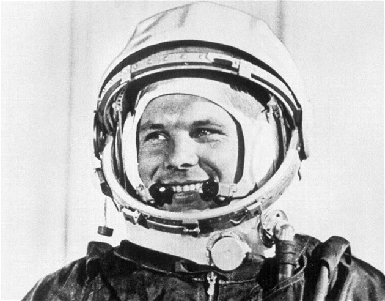
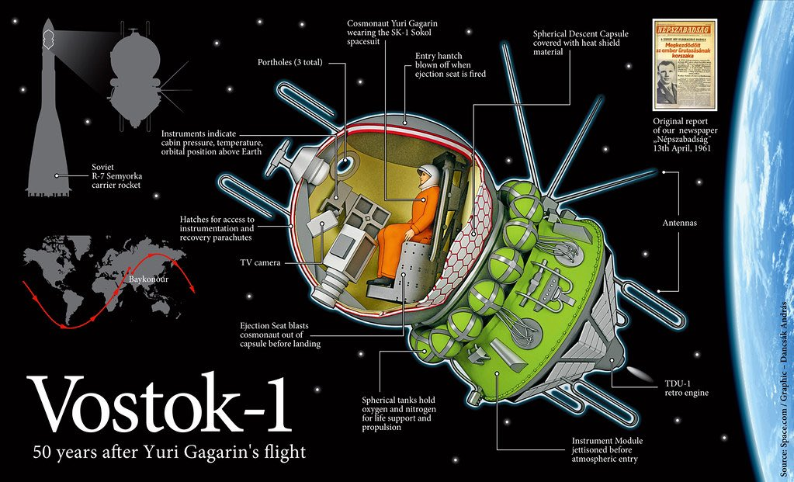

O Juriji Gagarinovi
Jurij Gagarin celým jménem Jurij Alexejevič Gagarin, byl sovětský vojenský pilot a kosmonaut. Narodil se 9. března 1934 a zemřel 27. března 1968. Po absolvování vojenské letecké školy vstoupil do sovětského letectva, kde dosáhl hodnosti nadporučíka. Jeho výrazný výkon a charakter ho přivedly mezi šedesát vybraných vojenských pilotů pro sovětský kosmický program.Dne 12. dubna 1961 se stal prvním člověkem v historii, který letěl do vesmíru.
Let do vesmír
Dne 12. dubna 1961 vzlétla jeho kosmická loď Vostok 1 z kosmodromu Bajkonur. Gagarin oběhl Zemi jednou za 108 minut a poté úspěšně přistál. Při zážehů motorů Gagarin vykřikl: "Поехали!" do češtiny to je: "Jedeme!"
Dědictví
Jurij Gagarin se stal ikonou vesmírného věku a inspirací pro miliony lidí po celém světě. Jeho úspěch přispěl k rozvoji kosmických programů a popularizaci kosmonautiky. Jeho jméno je spojeno s odvahou, odhodláním a lidským toužením po průzkumu vesmíru.
Po smrti Jurije Gagarina byly po celém Sovětském svazu postaveny mnohé památníky a muzea na jeho počest. V roce 2011 UNESCO vyhlásilo 12. duben, den jeho historického letu do vesmíru, za Mezinárodní den lidského vesmírného letu.